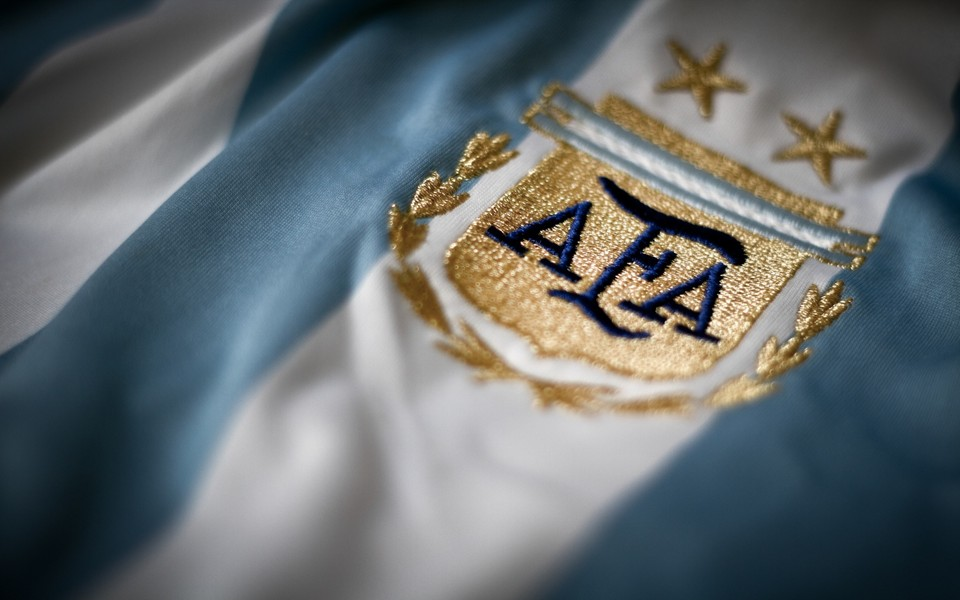

| La Asociación del Fútbol Argentino (A.F.A) es la entidad encargada de regular el fútbol en Argentina.


La Asociación del Fútbol Argentino (AFA) fue fundada en Buenos Aires el 21 de febrero de 1893, con el objetivo de promover y organizar el fútbol en Argentina. La iniciativa surgió de un grupo de entusiastas del deporte que se reunieron en el local de la Asociación Inglesa de Football, ubicado en la calle Perú 42.
En esa primera reunión participaron representantes de cinco clubes: Buenos Aires English High School, St. Andrew's Scots School, Old Caledonians, Belgrano Football Club y Buenos Aires Football Club. En conjunto, acordaron la formación de una Comisión Directiva provisional, encargada de redactar el estatuto y organizar el primer torneo de fútbol.
El primer presidente de la AFA fue el inglés Alexander Watson Hutton, quien es considerado el "padre del fútbol argentino". Bajo su liderazgo, la AFA se dedicó a fomentar la práctica del fútbol en todo el país y a promover la creación de nuevas asociaciones regionales.
En sus primeros años, la AFA organizó varios torneos de fútbol y estableció las reglas y normas para la práctica del deporte en Argentina. Con el tiempo, la AFA se convirtió en una de las asociaciones de fútbol más importantes de Sudamérica y un referente a nivel mundial en la organización y desarrollo del fútbol.
A lo largo de su historia, la AFA ha enfrentado diversos desafíos y ha tenido que adaptarse a los cambios en el fútbol y en la sociedad en general. Durante el siglo XX, el fútbol se convirtió en un fenómeno de masas en Argentina y la AFA tuvo que ampliar su estructura para dar respuesta a las necesidades de los clubes y de los aficionados.
Hoy en día, la AFA es una de las asociaciones de fútbol más importantes de Sudamérica y un referente a nivel mundial en la organización y desarrollo del fútbol. Su trabajo se extiende a todos los niveles del deporte, desde la organización de torneos profesionales hasta la promoción de la práctica del fútbol en escuelas y clubes de barrio.
El presidente de la Asociación del Fútbol Argentino (AFA) es la máxima autoridad de la entidad encargada de regular y organizar el fútbol en Argentina. Desde su fundación en 1893, la AFA ha tenido una serie de presidentes que han liderado la organización y han trabajado para el desarrollo del deporte en el país.
El actual presidente de la AFA es Claudio Tapia, quien asumió el cargo en 2017. Tapia es un dirigente de fútbol con una larga trayectoria en la actividad, que comenzó en el club Barracas Central, donde ocupó diferentes cargos dirigenciales. Posteriormente, se desempeñó como presidente del Club Atlético Barracas Central y de la Liga de Fútbol de Avellaneda.
En 2016, Tapia se convirtió en presidente del Club Atlético Boca Juniors, uno de los clubes más populares y exitosos de Argentina. Su gestión al frente de Boca Juniors se destacó por la obtención de varios títulos, entre ellos el campeonato argentino de fútbol en el año 2017.
Al año siguiente, Claudio Tapia fue elegido como presidente de la AFA, en un momento en el que la entidad atravesaba una crisis institucional y deportiva. Su llegada al cargo supuso un cambio de rumbo en la gestión de la AFA, con una política de renovación y modernización de la entidad.